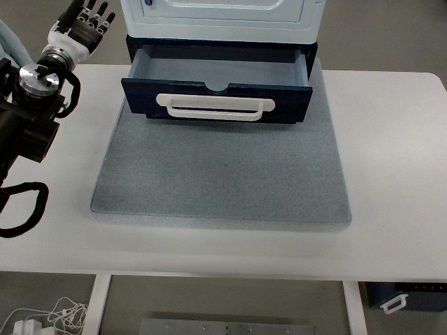

RoboMIND · tienkung_gello_1rgb__close_the_drawer_under_the_combination_cabinet/1211_111642
Close the drawer under the combination cabinet

Visual review action_review.json
{
"prompt_protocol": "humanoid_action_v1",
"prompt_protocol_note": "humanoid_action_v1 is applied by analogy to a non-Humanoid-Everyday/GR1 humanoid (Tien Kung with dexterous hands, single overhead RGB stream).",
"prompt_provenance": "visually_authored_from_video_and_initial_frame",
"dataset": "x-humanoid-robomind/RoboMIND",
"task": "close_the_drawer_under_the_combination_cabinet",
"episode_id": "1211_111642",
"source_video": "../../original/data/trajectory.hdf5",
"generation_camera": "camera_top",
"source_frame_count": 584,
"source_resolution": [
640,
480
],
"source_fps": null,
"source_fps_note": "FPS is not recorded in the source HDF5; 30 FPS is only a nominal playback rate, so no real-time durations are claimed.",
"selected_source_frame_start": 0,
"selected_source_frame_end_exclusive": 584,
"selected_frame_count": 584,
"selection_reason": "The episode is one continuous single task (close the drawer): the arm swings out of view, re-enters, pushes the drawer closed, withdraws and returns to the starting pose. These are ordinary phases of one task, so the complete clip is retained and no shortened branch or separate full-sequence prompt is made.",
"usable_prompt": "The robot's arm at the image left swings out of view, then re-enters from the upper left with its open dexterous hand, fingers relaxed. The hand presses against the front of the open navy drawer near its white handle and pushes the drawer steadily inward until it sits closed in the cabinet. The arm then lifts off, retracts to the left, and returns to its starting pose beside the table. Keep the camera fixed; preserve robot geometry, physically valid joint motion, and normal gripper opening and closing.",
"full_sequence_prompt": null,
"selected_action_outcome": {
"status": "visually_completed",
"description": "The drawer, open at frame 0 with its blue interior visible, is pushed inward by the hand between about frames 176 and 320 and appears fully closed and flush with the cabinet by about frame 330 (flat dark front with white handle, interior no longer visible). It stays closed after the hand lifts off (about frames 384-430) and the arm leaves the view; the arm returns to the left starting pose by about frame 552."
},
"source_overall_outcome": {
"status": "visually_completed",
"source_quality_label": "success_episodes/train (from archive member path)",
"description": "Same as the selected action: drawer closed at the end, arm back at its starting pose at the image left."
},
"anatomical_side_evidence": {
"visible_description": "Only one robot arm is ever visible. It is a black arm with a white-shelled dexterous five-finger hand, entering from the left edge of the overhead image. At frame 0 and again from about frame 530 the hand is raised at the top-left with the fingers pointing up and a black cable loop below it. While pressing the drawer the back of the hand faces up, the fingers point toward image right and the thumb is the dark digit with a white spot pointing toward the lower image edge (toward the camera).",
"telemetry_evidence": "puppet/joint_position: only columns 0-6 change over the episode (std 0.15, 0.10, 0.47, 0.42, 0.34, 0.18, 0.24); columns 7-15 are constant (hand/gripper and second arm blocks do not move). So one arm block acts alone, and the other arm stays idle and out of view.",
"visual_certainty": "Robot-relative left/right is NOT reliably established: the overhead camera never shows the torso. A palm-down hand with fingers toward image right and thumb toward the image bottom is consistent with a left hand, and the first joint block is conventionally the left arm, but neither is verified. The prompt therefore describes the arm by where it enters the image (image left) instead of naming an anatomical side."
},
"arm_roles": {
"active_visible_arm": "The single visible arm enters from the image left. After swinging away out of view it re-enters from the upper left, extends over the open drawer with the dexterous hand open and relaxed, presses against the drawer front near the handle to push the drawer inward until closed, then lifts off and retracts leftward and back to its starting pose.",
"other_arm": "Not visible and idle: the second joint block is constant throughout the telemetry."
},
"coordination": "Single arm acts alone; no hand-to-hand transfer, second-arm support or human interaction. Bystander legs/shoes are visible in the background beyond the table at about frames 256-300 and are not involved in the task.",
"chronology": [
{
"source_frames_inclusive": [
0,
22
],
"observation": "Arm at the top-left with the dexterous hand raised, fingers pointing up and a black cable loop below it; drawer open with its blue interior visible, white handle on the front. The hand does not touch the drawer."
},
{
"source_frames_inclusive": [
24,
70
],
"observation": "Arm slides out of the image toward the left, first the hand (about frames 40-58) and then the forearm, leaving the view by about frame 72; the drawer is unchanged and open."
},
{
"source_frames_inclusive": [
72,
146
],
"observation": "Arm absent from view (only a bit of teal sleeve at the left edge in places); drawer open and unchanged."
},
{
"source_frames_inclusive": [
148,
172
],
"observation": "Black arm structure and then the white forearm/hand re-enter from the top-left over the cabinet top (hand visible from about 148-150, then clearly at 164-172); drawer still open."
},
{
"source_frames_inclusive": [
174,
196
],
"observation": "Arm lowers/extends in front of the cabinet with the white-shelled hand palm-down, fingers pointing toward image right, thumb pointing toward the lower image edge; the hand and wrist hover at the drawer top edge/handle; drawer start to slide in (open interior narrowing by about frames 176-196)."
},
{
"source_frames_inclusive": [
198,
310
],
"observation": "Hand stays above the handle region with the fingers loosely open and the thumb pointing downward, wrist/palm base against the handle/drawer front; the drawer gradually slides inward toward the cabinet (interior band shrinking in crops at 196, 240, 268, 284, 296, 310). Bystander shoes visible in the background at about 256-300."
},
{
"source_frames_inclusive": [
312,
332
],
"observation": "Drawer reaches the closed position: dark front panel with white handle flush with the cabinet, interior no longer visible (native frames 330, 384 confirm)."
},
{
"source_frames_inclusive": [
334,
396
],
"observation": "Hand remains resting against the closed drawer's handle area with no further drawer motion."
},
{
"source_frames_inclusive": [
398,
430
],
"observation": "Arm lifts the hand off the handle, then raises and shifts it up and to the left: hand reaches the top edge with the palm side partly visible at about frames 408-426 and moves out of view by about 430. Drawer remains closed."
},
{
"source_frames_inclusive": [
432,
510
],
"observation": "Arm out of view apart from the black loop/sleeve at the left edge (about 432-470); drawer closed and unchanged."
},
{
"source_frames_inclusive": [
512,
552
],
"observation": "Arm returns into the image from the left: black cable loop (about 512-524), then the silvery wrist and hand rise at the top-left."
},
{
"source_frames_inclusive": [
554,
582
],
"observation": "Arm settles at the starting pose of frame 0 (hand up with fingers pointing upward at the top-left, cable loop below); drawer closed. Final decoded frame 583."
}
],
"uncertainties": [
"Robot-relative left/right arm is not established (torso never visible overhead); described by the image side where the arm enters. Telemetry suggests the first 7-column block acts, with the other block idle.",
"Exact contact surface is unresolved from the overhead view: the hand/wrist sits against the drawer front near the handle while the drawer slides in, but whether the palm base, wrist or the thumb side bears the load cannot be separated; the fingers do not clearly grip the handle. The prompt therefore says the hand 'presses against the front of the open drawer near its white handle'.",
"Frame boundaries for the push (about 176-320) are approximate because the arm occludes much of the drawer front; closure is judged from the interior no longer being visible by about frame 330.",
"The arm leaves the view in the first segment and re-enters, so the initial leftward motion is not a task action; it is retained in the prompt because the full original clip is the reference.",
"FPS is not recorded in the source; frame indices are authoritative, not time.",
"Thumb orientation relative to the camera is not reliably resolvable at 640x480, so the prompt omits it."
],
"source_annotation_discrepancies": [
"Publisher instruction 'Close the drawer under the combination cabinet' matches the video: a drawer below the combination cabinet is closed. No color/object/side discrepancy; the instruction does not mention that the arm first leaves the view and that the drawer starts open and unobstructed for about the first 150 frames, and it does not give any arm side."
],
"inspection_coverage": {
"entire_sequence_reviewed": true,
"sampled_decoded_frame_indices": [
0,
2,
4,
6,
8,
10,
12,
14,
16,
18,
20,
22,
24,
26,
28,
30,
32,
34,
36,
38,
40,
42,
44,
46,
48,
50,
52,
54,
56,
58,
60,
62,
64,
66,
68,
70,
72,
74,
76,
78,
80,
82,
84,
86,
88,
90,
92,
94,
96,
98,
100,
102,
104,
106,
108,
110,
112,
114,
116,
118,
120,
122,
124,
126,
128,
130,
132,
134,
136,
138,
140,
142,
144,
146,
148,
150,
152,
154,
156,
158,
160,
162,
164,
166,
168,
170,
172,
174,
176,
178,
180,
182,
184,
186,
188,
190,
192,
194,
196,
198,
200,
202,
204,
206,
208,
210,
212,
214,
216,
218,
220,
222,
224,
226,
228,
230,
232,
234,
236,
238,
240,
242,
244,
246,
248,
250,
252,
254,
256,
258,
260,
262,
264,
266,
268,
270,
272,
274,
276,
278,
280,
282,
284,
286,
288,
290,
292,
294,
296,
298,
300,
302,
304,
306,
308,
310,
312,
314,
316,
318,
320,
322,
324,
326,
328,
330,
332,
334,
336,
338,
340,
342,
344,
346,
348,
350,
352,
354,
356,
358,
360,
362,
364,
366,
368,
370,
372,
374,
376,
378,
380,
382,
384,
386,
388,
390,
392,
394,
396,
398,
400,
402,
404,
406,
408,
410,
412,
414,
416,
418,
420,
422,
424,
426,
428,
430,
432,
434,
436,
438,
440,
442,
444,
446,
448,
450,
452,
454,
456,
458,
460,
462,
464,
466,
468,
470,
472,
474,
476,
478,
480,
482,
484,
486,
488,
490,
492,
494,
496,
498,
500,
502,
504,
506,
508,
510,
512,
514,
516,
518,
520,
522,
524,
526,
528,
530,
532,
534,
536,
538,
540,
542,
544,
546,
548,
550,
552,
554,
556,
558,
560,
562,
564,
566,
568,
570,
572,
574,
576,
578,
580,
582
],
"sampling_method": "Every second decoded frame of camera_top (frames 0-582) in 4x3 temporary contact sheets covering the whole 584-frame source (frame 583 not sampled; frames 580-582 show the settled start pose), plus native-resolution frames at the transitions and a native crop series of the drawer front during closing.",
"native_resolution_frame_indices": [
164,
174,
190,
220,
300,
330,
384,
400,
408,
418,
426,
432
],
"native_crop_frame_indices": [
176,
196,
240,
268,
284,
296,
310
],
"conditioning_png_inspected_after_sequence": true,
"conditioning_png": "../first_frame.png",
"temporary_evidence_location": "/tmp/rm_review_tienkung_gello_1rgb__close_the_drawer_under_the_combination_cabinet_1211_111642 (not a dataset artifact)",
"ancillary_camera_videos_used": false,
"telemetry_used": "puppet/joint_position columns sampled every 24 frames and per-column std to identify the moving arm block; supporting evidence only."
},
"generation_reference_validation": {
"source_frame_start": 0,
"source_frame_end_exclusive": 584,
"frame_count": 584,
"lossless_source_frame_correspondence_passed": true,
"original_source_hdf5_retained_unchanged": true
}
}